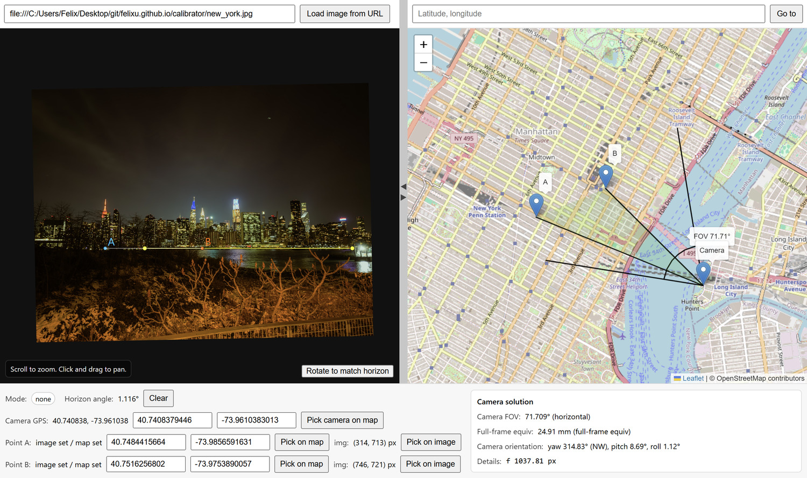
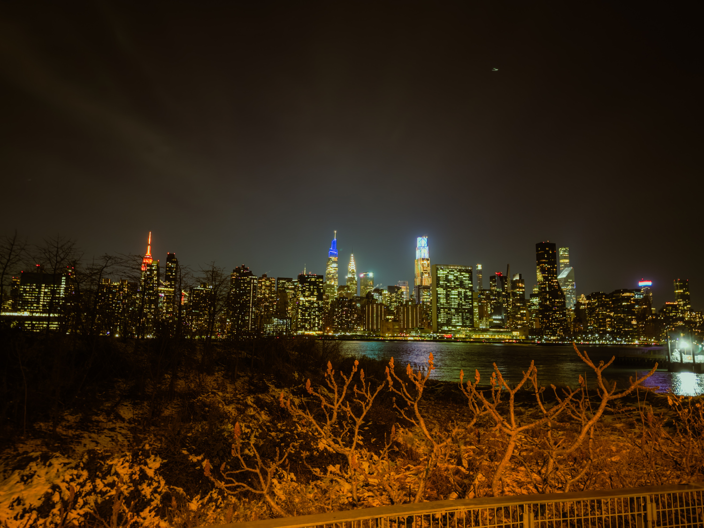
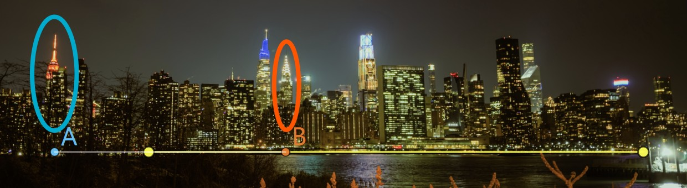
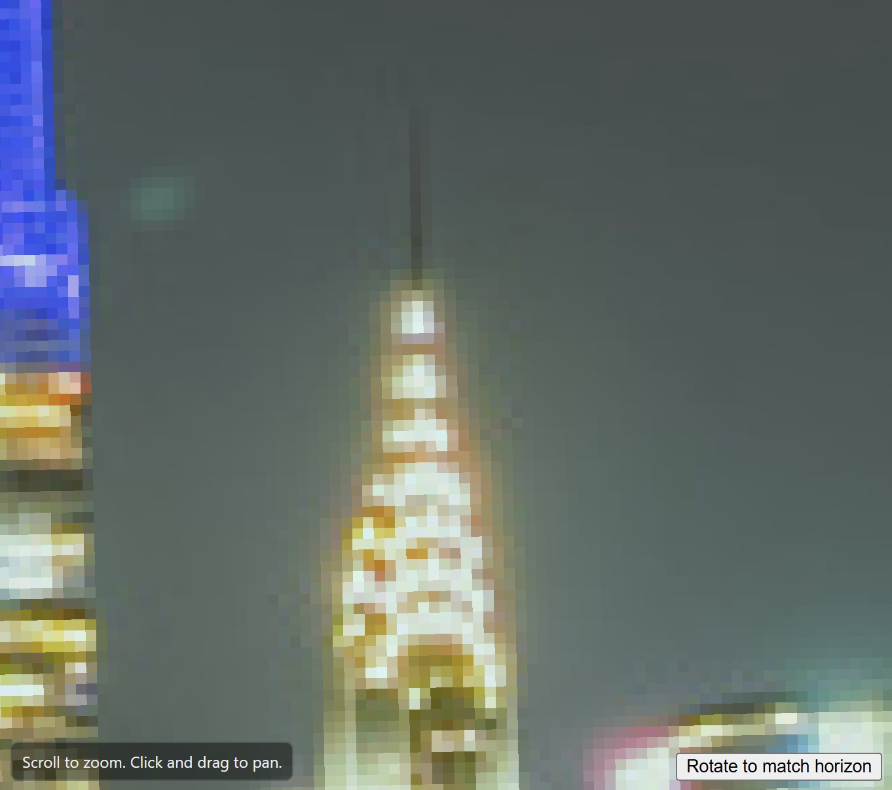
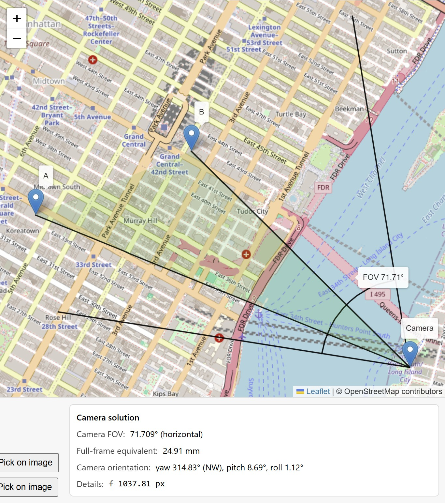

Run the web app here.
Problem
Given the following information:
- camera position;
- horizon line on an image; and
- two points on the image's horizon, with known latitude/longitude,
where is the camera looking, and what is its field of view?
Solution
Everything feeding the "camera solution" panel in the bottom right of the interface is pulled together in solveCameraIfReady().
click to toggle code snippet
function solveCameraIfReady() {
var w = leftImage.naturalWidth || 0;
var h = leftImage.naturalHeight || 0;
if (!w || !h) { setSolveMuted(); return; }
if (horizonP0 === null || horizonP1 === null) { setSolveMuted(); return; }
if (pointAImage === null || pointBImage === null) { setSolveMuted(); return; }
var clat = parseMaybeFloat(cameraLat.value);
var clng = parseMaybeFloat(cameraLng.value);
var alat = parseMaybeFloat(pointALat.value);
var alng = parseMaybeFloat(pointALng.value);
var blat = parseMaybeFloat(pointBLat.value);
var blng = parseMaybeFloat(pointBLng.value);
if (clat === null || clng === null) { setSolveMuted(); return; }
if (alat === null || alng === null) { setSolveMuted(); return; }
if (blat === null || blng === null) { setSolveMuted(); return; }
var roll = currentHorizonAngleRadians();
var cx = w * 0.5;
var cy = h * 0.5;
var rot = -roll;
var h0r = rotatePointAround(horizonP0, cx, cy, rot);
var h1r = rotatePointAround(horizonP1, cx, cy, rot);
var ar = rotatePointAround(pointAImage, cx, cy, rot);
var br = rotatePointAround(pointBImage, cx, cy, rot);
var bearingA = bearingRadians(clat, clng, alat, alng);
var bearingB = bearingRadians(clat, clng, blat, blng);
var deltaBearing = wrapPi(bearingB - bearingA);
var xA = ar.x - cx;
var xB = br.x - cx;
if (Math.abs(deltaBearing) < 1e-8) { setSolveMuted(); return; }
if (Math.abs(xA - xB) < 1e-8) { setSolveMuted(); return; }
var fLo = 1.0;
var fHi = 100000.0;
var i;
for (i = 0; i < 80; i += 1) {
var f = (fLo + fHi) * 0.5;
var aA = Math.atan2(xA, f);
var aB = Math.atan2(xB, f);
var d = wrapPi(aB - aA);
if (d > deltaBearing) {
fLo = f;
} else {
fHi = f;
}
}
var fPx = (fLo + fHi) * 0.5;
var alphaA = Math.atan2(xA, fPx);
var yaw = wrapPi(bearingA - alphaA);
var yH = horizonYAtX(h0r, h1r, cx);
var pitch = -Math.atan2((cy - yH), fPx);
var hfov = 2.0 * Math.atan2((w * 0.5), fPx);
var hfovDeg = hfov * 180.0 / Math.PI;
var equivMm = 36.0 / (2.0 * Math.tan(hfov * 0.5));
var yawDeg = ((yaw * 180.0 / Math.PI) % 360.0 + 360.0) % 360.0;
var pitchDeg = pitch * 180.0 / Math.PI;
var rollDeg = roll * 180.0 / Math.PI;
var yawCardinal = "N";
{
var dirs = ["N","NE","E","SE","S","SW","W","NW"];
var idx = Math.floor((yawDeg + 22.5) / 45.0) % 8;
yawCardinal = dirs[idx];
}
if (!isFinite(hfovDeg) || !isFinite(equivMm) || !isFinite(yawDeg) || !isFinite(pitchDeg) || !isFinite(rollDeg)) {
setSolveMuted();
return;
}
setSolveValues(hfovDeg, equivMm, yawDeg, yawCardinal, pitchDeg, rollDeg, fPx);
}
The horizon line's slope directly gives the camera roll via currentHorizonAngleRadians().
click to toggle code snippet
function currentHorizonAngleRadians() {
if (horizonP0 === null || horizonP1 === null) return 0.0;
return Math.atan2(horizonP1.y - horizonP0.y, horizonP1.x - horizonP0.x);
}
Before any geometry is solved, we need to rotate the image-space points around the image centre using rotatePointAround() so that the horizon is actually
horizontal. (This is independent of whether the user presses the "Rotate to match horizon" button to see the rotation.)
click to toggle code snippet
function rotatePointAround(p, cx, cy, angleRad) {
var x = p.x - cx;
var y = p.y - cy;
var c = Math.cos(angleRad);
var s = Math.sin(angleRad);
return { x: cx + x * c - y * s, y: cy + x * s + y * c };
}
Then we can compute the true bearing from the camera to points A and B, using bearingRadians.
The horizontal pixel offsets of A and B from the image center correspond to angular offsets from the camera’s forward direction:
atan2(x, f), where f is the focal length in pixels. The unknown is f, which
the code solves for numerically with a binary search loop inside solveCameraIfReady(); it adjusts f until the angular difference between A and B
in image space matches the real-world bearing difference (deltaBearing). This is what lets us tie map geometry to image geometry.
click to toggle code snippet
function bearingRadians(lat1Deg, lon1Deg, lat2Deg, lon2Deg) {
var lat1 = lat1Deg * Math.PI / 180.0;
var lon1 = lon1Deg * Math.PI / 180.0;
var lat2 = lat2Deg * Math.PI / 180.0;
var lon2 = lon2Deg * Math.PI / 180.0;
var dLon = lon2 - lon1;
var y = Math.sin(dLon) * Math.cos(lat2);
var x = Math.cos(lat1) * Math.sin(lat2) - Math.sin(lat1) * Math.cos(lat2) * Math.cos(dLon);
return Math.atan2(y, x);
}
The remaining parameters are now simple to compute directly.
- Yaw is computed by aligning the image ray to point A with the real bearing to A.
- Pitch comes from how far the horizon sits above or below the image center.
- The horizontal field of view is
2 * atan((imageWidth / 2) / f). - The "full-frame equivalent" is mainly for my benefit, and is a standard conversion assuming a 36mm sensor width.
click to toggle code snippet
var yaw = wrapPi(bearingA - alphaA);
click to toggle code snippet
var pitch = -Math.atan2((cy - yH), fPx);
click to toggle code snippet
var equivMm = 36.0 / (2.0 * Math.tan(hfov * 0.5));
All formatting and display happens in setSolveValues().
updateMapGeometry() mirrors the same computations to draw the FOV wedge on the Leaflet map.
For interactivity, ChatGPT was quite good at producing working JavaScript code (no comment on style or complexity). It was a big help here. I was initially embedding a Google Maps view as an iframe (shockingly simple!), but you can't place points and overlays on the map without setting up the full Maps API. I didn't want to be responsible for an API key and managing limited/paid credits, nor make the user input an API key, so ChatGPT steered me to the excellent Leaflet library, which is open-source, uses OpenStreetMap, and does not require special setup. It's perfect for a low-traffic public project like this.
Leaflet is the only library used in this project. The rest is vanilla JavaScript logic, which ChatGPT helped me finagle. I'm inexperienced with both JavaScript and camera calibration, so this was a great help.
Example
Let's look at an image I took in Hunters Point on the shore of the East River in Queens. I know what my exact location was, and just as importantly, the camera I used: an iPhone main camera, whose full-frame equivalent focal length is 24mm, according to Apple. I like to shoot in RAW format and apply my own edits, but I left the crop and rotation alone and disabled lens corrections. The framing is straight out-of-camera.
I used the click-and-drag-while-holding-shift functionality to set down a horizon line. Then, for each point, I clicked "Pick on image", and selected the very tips of the Empire State Building and the Chrysler Building, respectively (elliptical outlines added on top of screenshot for clarity).
Sidenote: beyond a certain zoom level, I have the web app's image filtering switch to nearest (instead of linear), to distinguish individual pixels. In this case, this helped me select the spire of the Chrysler building. Requiring shift to be held down to place the point also means that image panning and zooming still work, and won't be triggered accidentally.
Finally, finding the centres of both buildings on the map is simple enough.
Now we have a solution!
I am indeed (1) looking north-west, (2) angled slightly upwards, and (3) shooting with a full-frame-equivalent focal length of 24mm (the computation is 24.91mm, off by 0.91mm). Success! We can even look at the black frame-edge lines on the map to confirm that the left edge indeed catches the northernmost building of NYU Langone Medical Center...
...and the right edge cuts off the pier in Hunters Point!